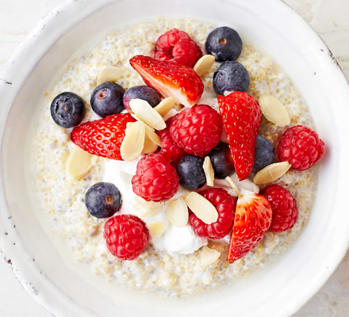

Oats and Chia porridge
Ingredients
- 150g porridge oats
- 50g milled seeds with flax and chia
- 400ml fortified oat milk
- 200g coconut yogurt
- 40g flaked almonds,toasted
- toppings of choice - such as blueberries, raspberries, strawberries
Recipe
- Soak the oats and seeds in 800ml water overnight. Toast your flaked almonds in a dry frying pan
over a medium heat until golden brown on each side, about 2-3mins. Set aside in an airtight
container.
- Tip into a pan with 200ml oat milk and heat, stirring, until bubbling and thick. Will keep in
the fridge for two days. Divide the rest between two bowls, along with 50ml oat milk each and
topping with a quarter portion each of the yogurt, almonds and toppings.
- The next day reheat the leftover porridge in a pan with a
splash more oat milk before serving with the toppings as described in step 2.
